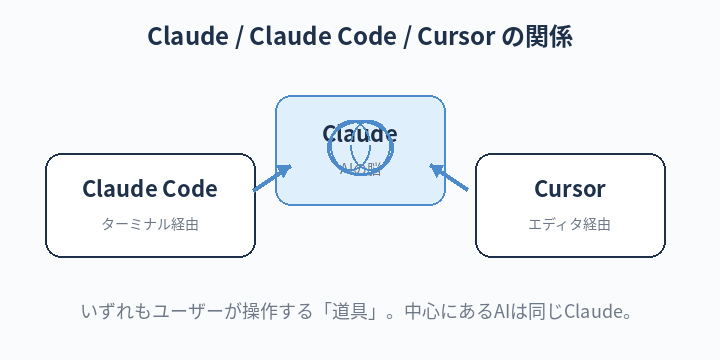
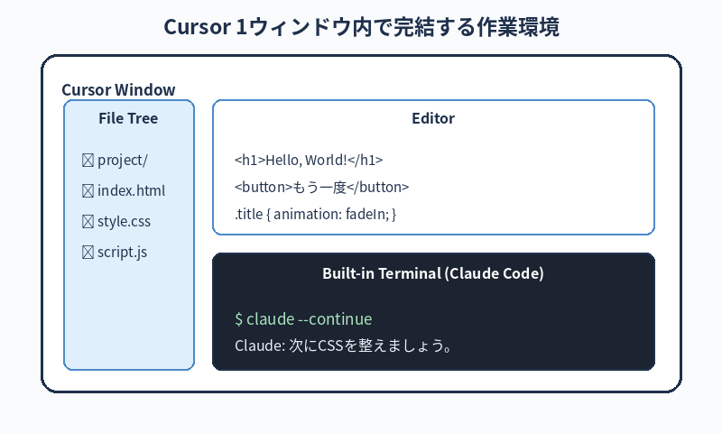

Claude（クロード）／Claude Code／Cursor という3つの言葉の違いがハッキリ分かる。
これから自分が何の道具を使って、何をしようとしているのかを、人に説明できる状態になる。
Claude Code とは何か／Cursor との関係
この章のゴール
そもそも AI って何が起きてる？
最近よく聞く「生成 AI」は、ものすごくざっくり言うと、大量の文章を読んで「次に来そうな言葉」を予測するのがめちゃくちゃ上手な仕組みです。
質問を投げると、過去に読んだ膨大な文章の知識を組み合わせて「それっぽい答え」を返してくれます。 プログラミングのコードも、文章の一種なので AI は書けます。
Poolside でこれから使うのは、Anthropic（アンソロピック）という会社が作っている Claude（クロード） という AI です。

3つの言葉を整理する
これから何度も出てくるので、最初に違いをハッキリさせます。
Claude（クロード）
AI そのものの名前です。Anthropic 社が作っている対話型 AI で、ChatGPT と同じような立ち位置です。
Web ブラウザから claude.ai にアクセスして使うこともできます。
Claude Code（クロード コード）
Claude を「ターミナルから直接呼び出して、コードを書いたりファイルを操作させたりするための道具」です。 Anthropic 社の公式ツールです。本書の主役。
具体的には、ターミナルで claude と打つと、AI と対話しながらこんなことができます：
- あなたのフォルダの中身を AI に見せて、「このコードを直して」と頼む
- 「この機能を追加するファイルを作って」と頼んで、AI に実際にファイルを書かせる
- 「テストを実行して、失敗したら直して」と頼む
- 「この設定の意味を解説して」と頼む
要するに、AI が自分の Mac を見ながら、いっしょに開発作業をしてくれるツールです。
Cursor（カーソル）
Cursor は コードを書くためのエディタ（テキストを編集するアプリ）です。 VS Code（マイクロソフトが作っているエディタ）をベースに、AI 機能を強化したものです。
Cursor の中で「ここのコード、こう直して」と AI にお願いすると、その場でコードを書き換えてくれます。 画面上で目で確認しながら作業できるので、初心者にとっつきやすいです。
Cursor 自体にも独自の AI が入っている
ここで重要なポイント：Cursor は「単なるエディタ＋ Claude Code 連携」ではありません。 Cursor を作っている会社（Anysphere 社）が独自に開発した AI 機能が、エディタの中に最初から組み込まれています。 主な機能は以下です：
- Cursor Tab：あなたがコードを書いている途中で、続きを予測して薄いグレーで提案してくれる機能。 Tab キーを押すと採用される。タイピングが激減する
- Cmd + K（インライン編集）：選択したコードに対して「ここを直して」とその場で AI に編集を頼む機能
- Chat / Composer / Agent：右側のサイドパネルで チャットしながらフォルダ全体を変更する機能。Claude Code に近い体験
Cursor の AI と Claude Code は "別々のツール" です
ここを混乱しないでほしいのですが、Cursor の AI 機能と Claude Code は、別の会社が作った別のツールです。
- Cursor の AI＝Anysphere 社のプロダクト（中で動かすモデルを Claude / GPT などから選べる）
- Claude Code＝Anthropic 社のプロダクト（中身は基本的に Claude）
両方とも「中で Claude（Anthropic 社の AI）を使えるオプションがある」ので混同しがちですが、ツールとしては別物です。 ログイン情報も別、料金体系も別、設定ファイルも別です。
雑にイメージすると：
- Cursor＝「AI 機能つきのエディタ」（Anysphere 社）
- Claude Code＝「ターミナルで動くAI 開発エージェント」（Anthropic 社）
本書では「Cursor 1つの中で Claude Code も動かす」のが基本
Poolside の運用は、別々のアプリを並べて使うのではなく、Cursor 1つのウィンドウで全部完結させるスタイルです。 具体的には：
- Cursor を起動して、案件フォルダを開く
- Cursor の内蔵ターミナル（メニューの「ターミナル」→「新規ターミナル」、または
control + `で開ける）を出す - その内蔵ターミナルの中で
claude --continueを実行 → Cursor の画面の下半分で Claude Code が動き出す - 上半分のエディタ領域でコードを目視・直接編集
こうすると、1つの Cursor ウィンドウの中に「エディタ」「内蔵ターミナル」「Claude Code」が同居します。
Mac 標準の「ターミナル.app」を別途開く必要はありません。
内蔵ターミナルは、Cursor で開いているフォルダが自動的にカレントディレクトリになるので、cd も基本的に不要です。
内蔵ターミナルは「Cursor のオマケ機能」ではなく、本物のターミナルそのものです。
Mac 標準のターミナル.app と中身は同じ（zsh が動く）。コマンドの結果も完全に同じになります。
なので、本書の第3章で覚えるターミナル知識は、Cursor 内蔵ターミナルでも全部そのまま通用します。
Mac 標準のターミナル.app と中身は同じ（zsh が動く）。コマンドの結果も完全に同じになります。
なので、本書の第3章で覚えるターミナル知識は、Cursor 内蔵ターミナルでも全部そのまま通用します。
Cursor も Claude Code もどちらか片方だけでも仕事はできます。 ですが、Poolside の運用では両方を Cursor 1ウィンドウで同時起動するのが標準です。 それぞれの得意分野が違うため、組み合わせると圧倒的に効率が上がります。
| 場面 | Cursor が向く | Claude Code が向く |
|---|---|---|
| 1行の typo 修正、変数名のリネーム | ◎（Cmd+K で即修正） | △（ターミナル開く手間がもったいない） |
| コードを書きながら続きを予測 | ◎（Cursor Tab） | —（ない） |
| ファイルを目で読む・確認する | ◎（画面で見やすい） | △（ターミナル表示は読みにくい） |
| 「フォルダ全体を作って」のような大きな指示 | ○（Composer/Agent で可） | ◎（CLAUDE.md / エージェント / スキルを活用できる） |
| git の commit / push まで一気にやる | △ | ◎（コマンド実行まで頼める） |
| 議事録の自動生成、長時間の対話 | ○ | ◎（セッションが長期保存される） |

典型的な運用イメージ（Cursor 1ウィンドウ完結型）
1ウィンドウの中で、こんな具合に動きます：
- Cursor を起動し、案件フォルダを開く（File → Open Folder）
-
control + `で内蔵ターミナルを開く。Cursor の画面下半分にターミナルが現れる -
内蔵ターミナルで
claude --continue（または初回はclaude）を実行 - Claude Code に「フォルダ全体に対する変更」を頼む。AI がファイルを書き換える
- Cursor のエディタ領域（上半分）に、書き換えられた結果が即座に反映される。目視で確認
-
気になる箇所があれば、エディタ側でCursor の AI（
command + K）を使ってその場でちょい直し - ターミナル側の Claude Code に戻って「commit して push」を頼む
つまり、「読む・目視確認・ちょい直し」は Cursor のエディタ＋ Cursor AI、「大きい変更・自動化・コマンド実行」は内蔵ターミナル内の Claude Code、と役割を分けるのがコツです。 どちらも同じウィンドウの中にいるので、視線移動だけで切り替えられます。
Cursor の AI（Cmd + K や Composer）と Claude Code を同じファイルに対して同時に動かすと、ファイルの変更が衝突することがあります。
どちらかが書き換えている最中に、もう一方が同じファイルを触らないように。
迷ったらClaude Code 側を主導にして、Cursor 側は目視確認とちょい直しに絞るのが安全です。
なぜターミナル.app ではなく Cursor の内蔵ターミナルなのか
-
カレントディレクトリの取り違いが起きない — Cursor で開いているフォルダ＝ターミナルのカレント。
cdし忘れて違うフォルダで claude を起動する事故が防げる - 視線移動だけで全部見える — エディタ・ターミナル・差分表示が1画面に並ぶ。アプリを切り替える疲労がない
- Cursor が認識しているファイルと、Claude Code が見ているファイルが完全に一致する — 不整合が起きにくい
- command + tab でアプリを行き来しなくていい — タッチタイピングの妨げにならない
Mac 標準のターミナル.app を単独で使うのは「練習・第3章まで」だ。 実務では Cursor の内蔵ターミナルで claude を動かす のが Poolside の標準。慣れろ。
別アプリを行き来していると、必ずどこかで「あれ、今いるフォルダどこだっけ」「どっちのターミナル？」と迷う。Cursor 1枚に集約すればその混乱が消える。
料金・ログインも別物
- Cursor のアカウント（Cursor Pro 等）：Anysphere 社との契約
- Claude Code のアカウント（Claude Pro / API 利用）：Anthropic 社との契約
会社支給アカウントが両方用意されている場合は、両方ともそれを使うこと（個人アカウントと混ぜない）。 アカウント周りで分からない時は、第1章の「お約束」のとおり居村に相談してください。
絶対に覚える：AI 開発環境の用語
混同しやすい3つを、しっかり区別しておきましょう。「これって何だっけ？」と聞かれて答えられるレベルを目指してください。
Claudeクロード
- 一言で
- Anthropic 社の対話型 AI そのもの
- たとえると
- 「相棒の頭脳」。ChatGPT と同じカテゴリ。Web 版・モバイルアプリ版もある
- 関連
- claude.ai / ChatGPT / Gemini
Claude Codeクロード コード
- 一言で
- Claude を ターミナルから呼び出して、自分の Mac を操作してもらうためのツール
- たとえると
- 相棒の頭脳に「手」を付けたもの。ファイルを作る／編集する／コマンドを実行する、まで頼める
- 関連
- ターミナル / claude コマンド / CLAUDE.md
Cursorカーソル
- 一言で
- AI 機能を強化したコードエディタ（テキスト編集アプリ）
- たとえると
- 普通のメモ帳の超強化版。中で AI に「ここを直して」と頼める
- 関連
- VS Code / コードエディタ
Promptプロンプト
- 一言で
- AI に投げる 指示文・質問文
- たとえると
- 相棒への「お願いの書き方」。これが上手いほど AI を使い倒せる
- 関連
- プロンプトエンジニアリング
Session / Contextセッション／コンテキスト
- 一言で
- AI との1回の会話のまとまりと、その中で AI が記憶している情報
- たとえると
- 「打ち合わせ1回ぶんの記憶」。
claude --continueで同じセッションの続きから話せる - 関連
- --continue / --resume / /clear
ChatGPTチャット ジーピーティー
- 一言で
- OpenAI 社の対話型 AI。世界で最も知名度の高いもう1人の相棒候補
- たとえると
- 「Claude の競合・親戚」のような存在。得意分野が少し違うので、用途で使い分ける
- 関連
- OpenAI / DALL-E / 音声対話
Geminiジェミニ
- 一言で
- Google 社の対話型 AI。Google サービスとの連携が強み
- たとえると
- 「Google 検索の結果も踏まえて答えてくれる相棒」。最新情報や Google Drive 連携が得意
- 関連
- Google / Workspace / リアルタイム検索
本書での組み合わせ
本書では、この2つを次のように使い分けます：
| 道具 | 主な用途 | 使う場面の例 |
|---|---|---|
| Cursor | コードを書く・読む・編集する | HTML / CSS / JS のファイルを開いて中身を確認、修正 |
| Claude Code | AI と相談しながら作業を進める | 「このフォルダ全体に対してこういう変更したい」「サーバーに上げる手順を教えて」など |
どちらか片方だけでも作業はできます。慣れてくると、「一覧で見たい時は Cursor、複雑な指示は Claude Code」のように自然に使い分けられるようになります。
料金についてのざっくり情報
両方とも有料プランがありますが、本書を進めるうえで必要な範囲では 無料枠 + 会社の支給アカウントで十分にカバーできます。 アカウントの準備は社内の総務／情シス担当に確認してください。
会社で支給されたアカウントには、個人の用事で使わないようにしてください（ログ・利用料金・契約面のトラブル防止）。
個人的に試してみたい時は、自分用のアカウントを別途作るのが安全です。
他の AI（ChatGPT / Gemini）との使い分け
本書のメインは Claude（と Claude Code / Cursor）です。 しかし業務全体で見ると、ChatGPT や Gemini も併用するのが実態です。 それぞれ得意分野が違うので、シーンに応じて使い分けるのが賢い運用です。
3つの AI、それぞれの得意・不得意
Claude（Anthropic 社）
- 得意：長文の読み解き／構造的で丁寧な文章／コードを書く・直す／文脈をしっかり捉えて応答する／安全性方針が明確で、機密関連の判断が無難
- 不得意：画像生成（できない／提案のみ）／リアルタイム情報（最新ニュースなど）には弱い場合がある
- 本書での位置付け：開発作業の主軸。Claude Code・Cursor 経由で動かす
ChatGPT（OpenAI 社）
- 得意：知名度が高く周辺情報・サンプルが多い／画像生成（DALL-E）／音声対話／GPTs（カスタム GPT）／豊富なサードパーティ連携
- 不得意：長文の精度はモデル次第で揺らぐ／日本語の自然さで Claude に劣ることもある
- 本書での位置付け：補助的に使う。特に画像生成・音声入力で重宝
Gemini（Google 社）
- 得意：Google 検索結果と連携した最新情報の取得／Google Workspace（Gmail / Drive / Docs）連携／画像理解・動画分析などのマルチモーダル
- 不得意：日本語の文章生成のニュアンスは Claude / ChatGPT の方が優れることが多い
- 本書での位置付け：補助的に使う。特に最新情報の調査・社内 Drive 資料との連携時に
使い分けの想定シーン
| シーン | おすすめ | 理由 |
|---|---|---|
| コードを書く・直す（本書の練習） | Claude（Claude Code / Cursor） | コーディング精度と長文の構造把握が強み |
| 長文の議事録・資料の要約／整理 | Claude | 長いコンテキストの読み解きと整理が得意 |
| ブレインストーミング・アイデア出し | ChatGPT または Claude | どちらも強い。比較するために両方試すのもあり |
| 画像を生成したい（資料の挿絵など） | ChatGPT（DALL-E） / 他の生成 AI | Claude は画像生成不可 |
| 最新ニュース・トレンド調査 | Gemini または ChatGPT | Gemini は Google 検索と直結。リアルタイム性が高い |
| 音声で対話したい（移動中など） | ChatGPT | 音声機能（Voice Mode）が成熟 |
| Gmail・Google Drive・Docs との連携 | Gemini | 純正の連携で、Drive 内文書の参照などがスムーズ |
| 動画や音声ファイルの解析 | Gemini | マルチモーダル処理が強い |
| 「これって何？」「なぜ？」の素朴な質問 | どれでも OK | 第1章で言ったとおり、迷わず即聞く |
同じ質問を複数の AI に投げる「並列確認」
重要な意思決定や、技術的判断で迷う時は、同じ質問を Claude と ChatGPT と Gemini の3つに投げて、回答を見比べるのが賢い運用です。 それぞれの AI が違う観点・違う引用元を出してくることが多いので、自分の理解が一気に立体的になります。
（Claude / ChatGPT / Gemini それぞれに同じ質問を投げる）
Firebase の Spark プランと Blaze プランの違いを、初心者向けに、メリット・デメリット・典型的な切替判断のタイミングを含めて解説してください。
Firebase の Spark プランと Blaze プランの違いを、初心者向けに、メリット・デメリット・典型的な切替判断のタイミングを含めて解説してください。
出てきた回答を見比べると、抜けている観点や、各 AI が強調する違うポイントが浮き彫りになります。 これは「AI を信じすぎない」リテラシーを育てる意味でも有効です。
機密情報の扱いはどの AI でも同じ
第7章で扱う機密情報のルールは、Claude でも ChatGPT でも Gemini でも同じく守ってください。
どれを使っても「あなたの入力したテキストは外部のサーバーに送られている」という事実は変わりません。
取引先名、契約金額、API キー、個人情報などは、どの AI にも貼り付けないのが鉄則です。
料金・契約も AI ごとに別
- Claude（Pro / Team）：Anthropic 社との契約
- ChatGPT（Plus / Team）：OpenAI 社との契約
- Gemini（Advanced）：Google との契約（Google Workspace 経由のことも）
会社支給アカウントが何のプランで揃っているかは、居村に確認してください。 個人で勝手に有料プランへ切り替えないこと（第1章「お約束」のとおり）。
「で、結局どう使うの？」
Poolside の現場運用は、「Cursor を起動して、その内蔵ターミナルで Claude Code を動かす」。これが標準です。
- Cursor は作業の入れ物（コードを見る／編集する／ターミナルを内包する）
- Claude Code はその内蔵ターミナルで動く相棒（フォルダ全体への大きな変更／コマンド実行）
- Cursor の AI（Cmd+K / Tab / Composer）はその場でのちょい直し用
つまり、「Cursor を開く＝作業を始める」「内蔵ターミナルで claude を起動＝相棒呼び出し」 の流れが、毎回の作業開始の合言葉。 Mac 標準のターミナル.app を単独で開く必要はほぼありません。
最初の数日は、第3章で覚えた「ターミナル.app での操作」を Cursor 内蔵ターミナルでも試してみてください。 動きは完全に同じです。違う「窓」で同じ「部屋」を見ている感覚になります。
次の章へ
どちらの道具も「ターミナル」と無関係には使えません。 次の第3章では、そのターミナルを初めて開いてみます。怖くないので大丈夫です。